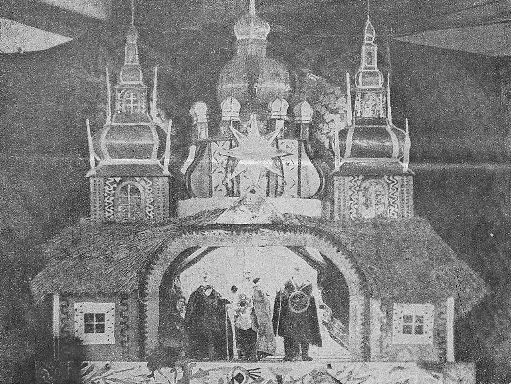
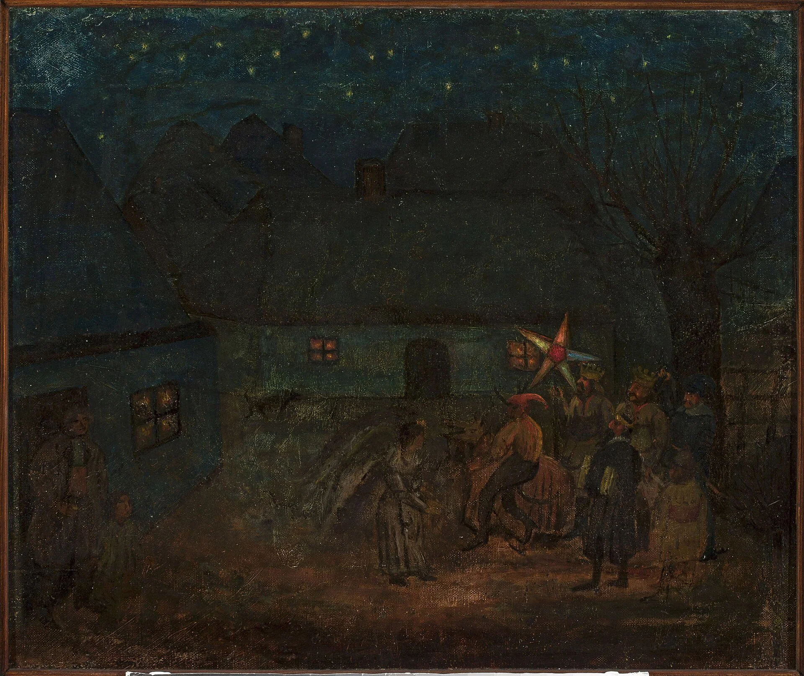
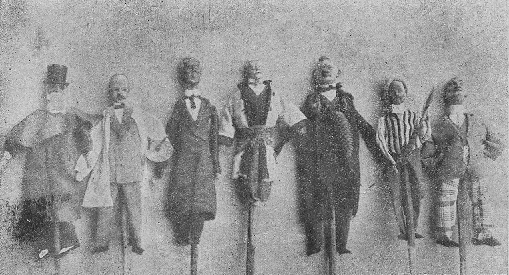
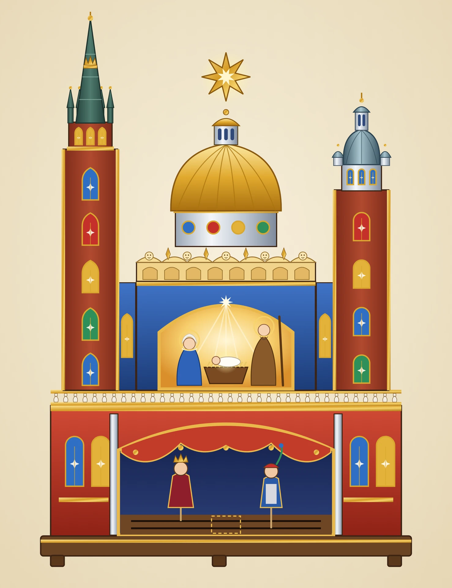
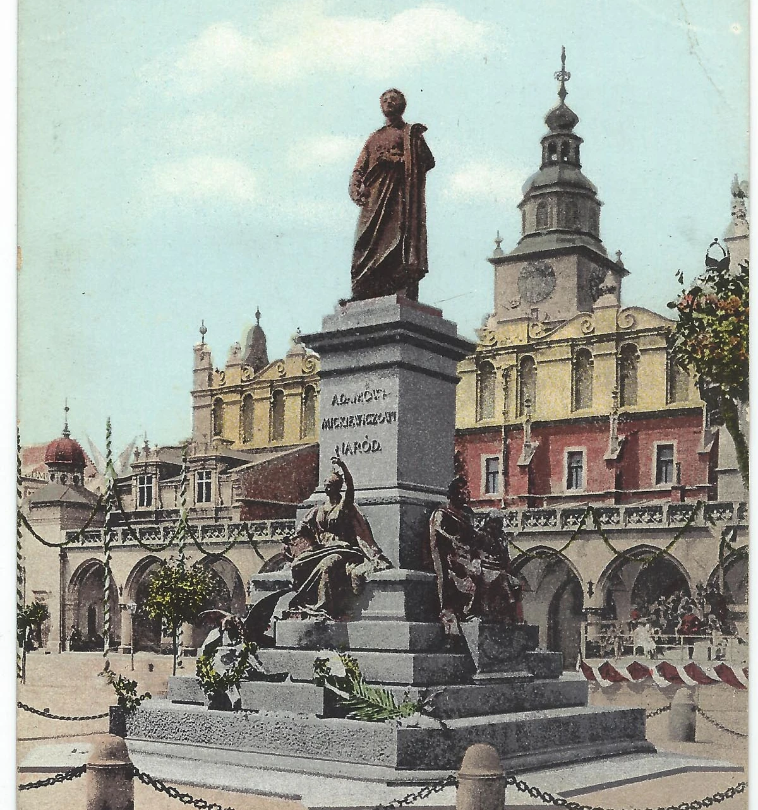
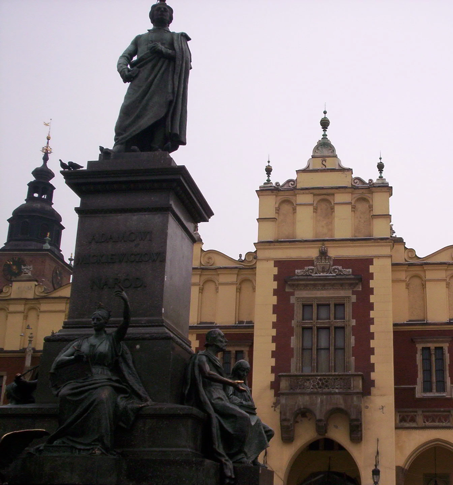

아직 펼치지 않은 카드세계의 성탄 전야 · 1크라쿠프 쇼프카아기 예수가 태어난 마구간이 왜 성당처럼 생겼을까요?아기 예수가 태어난 곳이 왜 성처럼 생겼을까?
19세기부터 · 해마다 12월 첫 목요일폴란드 크라쿠프 · 중앙 광장
크라쿠프 쇼프카
폴란드 크라쿠프에서는 해마다 12월 첫 목요일, 반짝이는 쇼프카(szopka, 성탄 구유 집)들이 중앙 광장의 동상 앞에 모여요. 쇼프카 안에는 아기 예수의 마구간과 함께 크라쿠프의 탑과 지붕이 들어 있어요. 도시 곳곳에서 온 조각을 하나씩 모아 쇼프카 한 채를 지어 보세요.
크라쿠프 사람들은 자기 도시의 탑과 지붕으로 아기 예수의 집을 지어. 흩어진 조각을 모아서 같이 지어 볼까?
검수 전 시안이에요(기준서 2판). 장면에는 기록에 있는 것만 옮겼고, 전해지는 이야기는 그렇다고 밝혔어요. 상상은 ‘눈 감고 상상해 보기’에만 썼어요. 조각 모으기의 쇼프카 그림은 이 안내서가 빗대어 그린 그림이에요.
시안 확인용카드 단계 미리 보기
1
일이 멈춘 겨울
19세기 크라쿠프 변두리 마을에는 미장이(벽돌을 쌓고 벽을 바르는 일꾼)와 난로 타일공이 많이 살았어요. 크로보드자(Krowodrza), 즈비에지니에츠(Zwierzyniec) 같은 마을이에요. 겨울이 오면 집 짓는 일이 멈췄어요.
일이 끊긴 겨울, 이들은 쇼프카를 만들었어요. 작은 것은 팔고, 큰 것은 들고 다니는 무대로 썼어요. 돈을 내고 부르면 그 집에 가서 인형극을 보여 주었어요.
성탄을 앞두고는 중앙 광장에 줄지어 서서 공연을 부탁할 손님을 기다렸어요. 쇼프카가 멋질수록 벌이가 좋았대요.

위 그림은 화가 타데우시 마코프스키(Tadeusz Makowski)가 1906년에 그린 「크라쿠프 쇼프카」예요. 별빛 아래 초가집 마당에 장대 끝에 별을 단 사람과 왕관 쓴 사람들이 와 있어요. 왼쪽에서는 어른과 아이가 지켜봐요.
겨울이 되면 집 짓는 아저씨들은 일을 쉬었어. 그때 반짝이는 작은 집을 만들어 들고 다녔대.
물어보기그림 속에서 장대 끝에 달린 별을 찾아볼까?
2
쇼프카의 어머니
크로보드자의 미장이 미하우 에제네키에르(Michał Ezenekier)도 쇼프카를 들고 다녔어요. 아들 레온(Leon)과 함께 만든 쇼프카가 지금 남아 있는 가장 오래된 크라쿠프 쇼프카예요. 크라쿠프 박물관은 이 쇼프카가 1898년이나 그보다 조금 전에 만들어졌다고 봐요.
두꺼운 나무판으로 짓고, 탑의 작은 창에는 색유리를 끼워 오린 무늬를 붙였어요. 난간 기둥 70개는 칼로 하나하나 깎았어요.
사람들은 이 쇼프카를 ‘쇼프카의 어머니’라고 불러요. 두 세계 대전 사이에 광장의 공연 무리가 사라지고 파는 쇼프카만 남자, 크라쿠프는 1937년에 대회를 열어 이 전통을 살리려 했어요. 크라쿠프 박물관 도록은 그 무렵 팔던 쇼프카들이 에제네키에르 쇼프카의 솜씨에 한참 못 미쳤다고 적어요.

아래층은 넓은 무대였어요. 쇼프카 뒤에 숨은 사람들이 노래하고 말하며, 철사 막대에 달린 인형을 손으로 움직였어요. 위 사진은 1923년 잡지에 실린 쇼프카 인형들이에요.
아래층은 작은 극장이야. 뒤에 숨은 사람들이 노래하면서 막대로 인형을 움직였어.
물어보기사진 속 인형 가운데 높은 모자를 쓴 인형을 찾아볼까?
3
광장의 조각을 모아
쇼프카 장인들은 도시의 건물을 쇼프카에 옮겨 넣었어요. 높이 솟은 모양은 광장 옆 성모 마리아 성당(Bazylika Mariacka)의 앞모습을 닮았어요. 장식은 바벨성 대성당의 지그문트 예배당(Kaplica Zygmuntowska)과 직물회관(수키엔니체, Sukiennice: 광장 한가운데의 옛 옷감 시장)의 지붕 장식 벽에서 왔어요.
지금도 대회에 내는 쇼프카에는 크라쿠프의 건물이 꼭 들어가야 해요.
아래 그림은 이 안내서가 그린 쇼프카예요. 진짜 쇼프카 한 채를 옮긴 것이 아니라, 가장 오래된 쇼프카에 대한 박물관 설명과 크라쿠프의 건물을 바탕으로 도시의 조각이 모여 쇼프카가 되는 모습을 빗대어 그렸어요.
흩어진 도시의 조각을 하나씩 눌러 쇼프카 자리로 모아 보세요.

이 안내서가 그린 쇼프카(빗대어 그린 그림이에요. 진짜 쇼프카 한 채를 옮긴 것이 아니에요) · 이 안내서가 그린 쇼프카 · 가장 오래된 쇼프카에 대한 박물관 설명과 크라쿠프의 건물(성모 마리아 성당의 두 탑, 지그문트 예배당, 직물회관)을 바탕으로
조각을 누르면 제자리로 가고, 그 조각이 크라쿠프의 어디에서 왔는지 알려 줘요.
일곱 조각이 다 모였어요. 크라쿠프의 탑과 지붕 사이에 베들레헴의 마구간이 자리를 잡았어요.
성당의 탑, 금빛 지붕, 마구간… 조각을 하나씩 눌러서 쇼프카를 지어 봐!
물어보기아기 예수는 몇 층에 계실까?
4
12월 첫 목요일 정오
1937년 12월 21일, 크라쿠프시가 처음으로 쇼프카 대회를 열었어요. 쇼프카 86채가 나왔어요. 쇼프카들은 중앙 광장의 시인 아담 미츠키에비치(Adam Mickiewicz) 동상 아래에 놓였어요.
1940년 8월 17일, 크라쿠프를 점령한 독일군이 이 동상을 부쉈어요. 전쟁이 끝난 1945년, 장인들은 동상이 서 있던 빈자리로 다시 쇼프카를 들고 모였어요. 동상은 1955년 11월 26일에 다시 세워졌어요.


지금도 해마다 12월 첫 목요일 아침이면, 장인들이 쇼프카를 들고 와 동상 계단에 늘어놓아요. 정오에 성모 마리아 성당의 높은 탑에서 나팔 소리 ‘헤이나우’(hejnał, 나팔수가 부는 신호 가락)가 울리면, 쇼프카 행렬이 광장을 돌기 시작해요.
쇼프카들은 이 동상 앞에 모여. 동상은 전쟁 때 부서졌다가 다시 세워졌어. 정오에 나팔 소리가 울리면 행렬이 출발해!
물어보기나팔수는 네 쪽을 보며 한 번씩 불어. 나라면 어느 쪽에서 듣고 싶어?
눈 감고 상상해 보기
12월 첫 목요일, 찬 공기 속 광장에 사람들이 빼곡해요. 동상 계단에 놓인 쇼프카들의 은박과 색유리가 낮은 겨울 해를 받아 반짝여요. 머리 위 높은 탑에서 나팔 소리가 울리다가, 가락 중간에서 뚝 끊겨요. 이제 행렬이 출발할 시간이에요.
눈을 감아 봐. 추운 광장에 반짝이는 작은 성들이 줄지어 서 있어. 높은 탑에서 나팔 소리가 울리다가 뚝 멈춰. 이제 출발이야!
나의 자리
처음 본 1923년의 쇼프카예요. 이제 저 뾰족탑과 둥근 지붕이 크라쿠프의 어느 거리에서 왔을지 떠올려 보세요.
크라쿠프 사람들은 제 도시의 탑과 지붕으로 아기 예수의 집을 지었어요. 내가 사는 곳에서 그 집에 꼭 넣고 싶은 건물은 어디인가요?
우리 동네에서 아기 예수 집에 붙여 주고 싶은 건물은 어디야?
마음에 닿는 한 줄을 고르거나 직접 써 보세요. 한 줄을 남기면 이 자리의 도장이 찍혀요. 이 기기에만 저장돼요.
더 깊이
궁금한 칸만 펼쳐 읽어도 괜찮아요.
알고 보면
쇼프카 대회의 하루 장인들은 12월 첫 목요일 아침부터 쇼프카를 들고 와 미츠키에비치 동상 계단에 늘어놓아요. 정오의 나팔 소리가 끝나면 민속 악단을 앞세운 행렬이 광장을 돌고, 쇼프카는 크시시토포리 궁전(Pałac Krzysztofory)의 크라쿠프 박물관으로 옮겨져 심사를 받아요. 결과는 그다음 일요일에 알려요.
나팔 소리 ‘헤이나우’ 성모 마리아 성당의 높은 탑에서는 크라쿠프 소방관 나팔수들이 한 시간마다 나팔을 불어요. 남쪽 바벨성(왕), 서쪽(시장과 시 의원), 동쪽(상인), 북쪽(성문으로 들어오는 손님)을 향해 한 번씩 불어요. 정오의 소리는 1927년부터 폴란드 라디오로 온 나라에 방송돼요.
폴란드의 첫 유네스코 무형유산 2018년, 크라쿠프 쇼프카 전통이 유네스코 인류무형문화유산 대표 목록에 올랐어요. 폴란드 전통으로는 이 목록에 처음 오른 것이에요.
기록마다 다른 점
가장 오래된 쇼프카는 언제? 크라쿠프 박물관 도록은 ‘1898년이나 그보다 조금 전’, 민속 박물관을 다룬 기사는 ‘19세기 말’, 다른 기사는 ‘1900년 무렵’이라고 해요. 에스트라이헤르(Estreicher) 형제는 1904년 책에서 에제네키에르가 ‘1864년부터’ 쇼프카를 들고 다녔다고 적었어요. 그런데 그가 1854년에 태어났다는 기록이 나와서, 연구자는 그가 어릴 때 다른 무리에서 배우기 시작했을 거라고 봐요.
이름도 두 가지 ‘에제네키에르’는 에스트라이헤르 형제가 귀로 듣고 적은 이름이에요. 후손은 집안 이름이 ‘에스네키에르(Esnekier)’라고 민속 박물관에 알려 주었어요.
가락 중간에서 끊기는 나팔 소리 헤이나우는 가락 중간에서 갑자기 멈춰요. 성당 누리집은 타타르 군의 화살을 맞은 나팔수를 기리는 전설로 소개해요. 비지트 마워폴스카(지역 관광 안내처)는 1928년 미국 작가 에릭 켈리(Eric P. Kelly)의 책보다 앞선 기록에서는 이 이야기가 보이지 않는다고 해요. 아이리시 타임스 기사는 켈리가 이야기를 널리 퍼뜨렸지만, 1920년대 초에 이미 그런 이야기가 있었다고 적어요.
직접 가 보기
확인한 날 · 2026년 11월 18일 · 바뀌기 쉬운 정보라 정기적으로 다시 확인해요
2026년의 12월 첫 목요일은 12월 3일이에요(달력으로 계산). 아침부터 중앙 광장(Rynek Główny)의 미츠키에비치 동상 계단에서 쇼프카를 볼 수 있고, 정오의 나팔 소리 뒤에 행렬이 출발해요. 정확한 시간은 크라쿠프 박물관 공지로 확인하세요.
대회가 끝난 쇼프카는 이듬해 2월 말이나 3월 초까지 크시시토포리 궁전(중앙 광장 35번지)에서 전시해요. 2025년 대회 작품은 2025년 12월 8일부터 2026년 3월 1일까지 전시했어요.
일곱 조각 모으기 금박
흩어진 도시의 조각 일곱 개를 모두 제자리로 모으면 카드에 금박이 입혀져요.
흩어진 일곱 조각을 모두 모으기
정오의 나팔 소리 채색
쇼프카 행렬을 출발시키는 정오의 나팔 소리를 듣거나, 아이와 함께 ‘영화처럼 보기’를 끝까지 보면 카드가 채색돼요. 둘 가운데 하나만 해도 돼요.
‘12월 첫 목요일 정오’ 장면에서 헤이나우 들어 보기
아이와 함께 ‘영화처럼 보기’를 끝까지 보기
근거 보기 (25)
- 비지트 마워폴스카: 크라쿠프 민속 박물관의 쇼프카 — 19세기 겨울에 일이 멈춘 변두리 미장이들, 작은 쇼프카는 팔고 큰 것은 들고 다니는 무대, 집으로 부르는 공연, 에제네키에르의 가장 오래된 쇼프카
- dzieje.pl(폴란드 역사 박물관, 2015): 크라쿠프 쇼프카 — 겨울에 일이 없던 미장이·난로 타일공(즈비에지니에츠·크로보드자 등), 성모 마리아 성당을 닮은 탑 모양, 지그문트 예배당과 직물회관 아티카에서 온 장식, 광장에 줄지어 기다린 공연 무리, 1937년 12월 21일 첫 대회
- dzieje.pl(PAP): 에제네키에르 쇼프카 — 두꺼운 나무판, 색유리 창의 오린 무늬, 칼로 깎은 난간 기둥 70개, 성모 마리아 성당 탑과 지그문트 예배당 돔을 닮은 모양, 위층으로 올린 성가족, 바닥 문과 틈이 있는 무대, 사라진 움직이는 별과 1989년 파친스키의 새 별, 1854년생, 이름 Esnekier, 19세기 말
- 마우고자타 올레슈키에비치, 「에제네키에르 장인의 인형」(Rocznik Krakowski 85, 2019) — 숨은 사람들이 움직인 인형, 무대 바닥의 틈 두 줄, 헤로데 왕의 바닥 문, 에스트라이헤르 형제의 1904년 책(‘1864년부터’, ‘쇼프카 노장’)
- 크라쿠프 박물관, 제80회 쇼프카 대회 도록(2022) — 에제네키에르 쇼프카는 1898년이나 그보다 조금 전, 첫 대회 1937년 12월 21일, 크라쿠프 건물은 꼭 넣기
- 크라쿠프 박물관, 제79회 쇼프카 대회 안내(2021) — 첫 대회 때 쇼프카를 미츠키에비치 동상 아래에 놓음, 크라쿠프 건물은 꼭 넣기
- 크라쿠프 박물관, ‘쇼프카 둘레’ 산책 안내(2024/2025) — 에제네키에르 집안의 ‘쇼프카의 어머니’(민속 박물관 소장), 겨울에 일거리를 찾던 변두리 미장이들, 1945년 다시 열고 1946년부터 박물관이 엶
- 크라쿠프 박물관, ‘쇼프카 둘레’ 산책 안내(2025/2026) — 12월 첫 목요일 아침부터 동상 계단에 쇼프카를 놓음, 그날 심사하고 일요일에 상, 전쟁으로 여섯 해 멈춘 뒤 1945년에 다시 엶
- 크라쿠프 박물관: 크시시토포리 궁전의 쇼프카 전시 — 12월 첫 목요일, 정오 나팔 소리 뒤 민속 악단을 앞세운 행렬, 2025.12.8~2026.3.1 전시
- 라디오 크라쿠프(2023): 제81회 대회 — 12시 나팔 소리 뒤 광장을 도는 행렬, 그다음 크시시토포리 궁전에서 심사
- dzieje.pl(PAP, 2012): 1937년 첫 대회에서 86채를 심사, 1945년 다시 엶, 1946년부터 박물관이 엶
- dzieje.pl(PAP, 2018): 가장 오래된 크라쿠프 쇼프카는 1900년 무렵 에제네키에르 작품, 민속 박물관 소장
- dzieje.pl(PAP, 2025): 1945년, 무너진 미츠키에비치 동상 자리에 장인들이 다시 모임 · 결과는 목요일 다음 일요일
- 크라쿠프시: 미츠키에비치 동상 — 1898년 6월 26일 세움, 1940년 8월 17일 독일 점령군이 부숨, 1946년 함부르크에서 조각을 찾음, 1955년 11월 26일 다시 세움
- 야니나 쿠츠, 「사진으로 본 전쟁 뒤의 크라쿠프」(Krzysztofory) — 1955년부터 다시 동상 계단에 쇼프카를 놓음
- 성모 마리아 성당 누리집: 두 탑 — 높은 탑 82m와 둘레의 작은 뾰족탑, 낮은 탑 69m와 1592년 둥근 지붕·등롱·네 귀의 작은 둥근 지붕, 나팔 소리의 전설
- 비지트 마워폴스카: 헤이나우 — 1666년의 금관, 소방관 나팔수, 한 시간마다 네 쪽으로, 1927년부터 정오 라디오 방송, 1928년 켈리의 책 이전 기록 없음
- 아이리시 타임스(2006): 켈리가 퍼뜨린 나팔수 전설, 1920년대 초에 이미 있던 이야기
- 바벨 대성당 누리집: 지그문트 예배당 — 바르톨로메오 베레치, 1519~1533년
- 라디오 크라쿠프: 지그문트 예배당 지붕은 1591년 안나 야기엘론카 왕비의 명으로 금빛을 입음
- 폴란드 문화유산청(zabytek.pl): 직물회관 — 1555년 화재, 1556~1559년 다시 지음, 산티 구치의 얼굴 조각
- 크라쿠프시: 직물회관 — 지붕을 가리는 아케이드 아티카와 얼굴 조각을 단 꼭대기 장식
- 유네스코: 크라쿠프 쇼프카 전통(2018년, 13차 위원회)
- dzieje.pl(PAP, 2019): 폴란드의 첫 유네스코 인류무형유산 대표 목록 등재 · 결과는 일요일
- 위키미디어 공용: 마코프스키 「크라쿠프 쇼프카」(1906, 바르샤바 국립 박물관) 정보
그림·사진·소리 출처
- 타데우시 마코프스키 그림 · 퍼블릭 도메인 · 위키미디어 공용
- 사진: 찍은 사람 모름 · 잡지 「노보시치 일루스트로바네」(1923) · 퍼블릭 도메인 · 위키미디어 공용
- 이 안내서가 그린 쇼프카 · 가장 오래된 쇼프카에 대한 박물관 설명과 크라쿠프의 건물(성모 마리아 성당의 두 탑, 지그문트 예배당, 직물회관)을 바탕으로
- 그림엽서: 만든 사람 모름(크라쿠프 ‘폴란드 화가 살롱’ 펴냄) · 퍼블릭 도메인 · 위키미디어 공용 · 일부 잘라 씀
- 사진: Marek013 · CC BY-SA 3.0 · 위키미디어 공용 · 일부 잘라 씀
- 사진: 찍은 사람 모름 · 잡지 「노보시치 일루스트로바네」(Nowości Illustrowane, 1923) · 퍼블릭 도메인 · 위키미디어 공용
- 「헤이나우」 크라쿠프 성모 마리아 성당 탑의 나팔 소리 · 녹음: Szczebrzeszynski(올린 사람이 직접 녹음, 2009) · 퍼블릭 도메인 · 위키미디어 공용 · mp3로 바꿔 씀
‘처음 만나는 기독교 문화’의 깊은 카드예요. 카드 단계와 남긴 글은 이 기기에만 저장돼요.